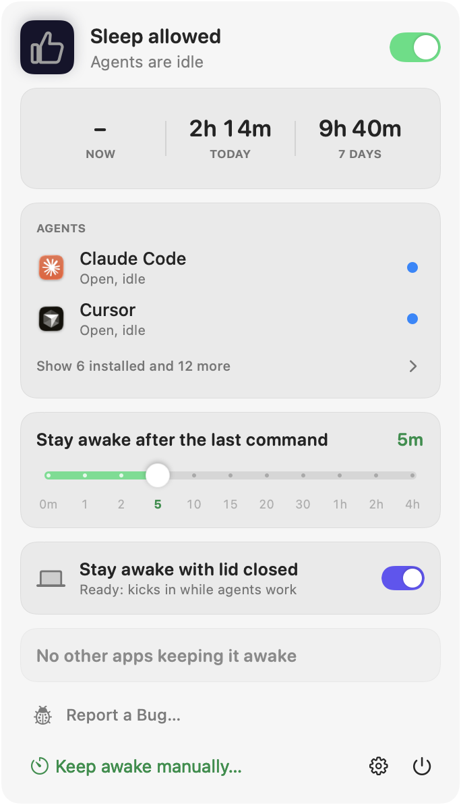
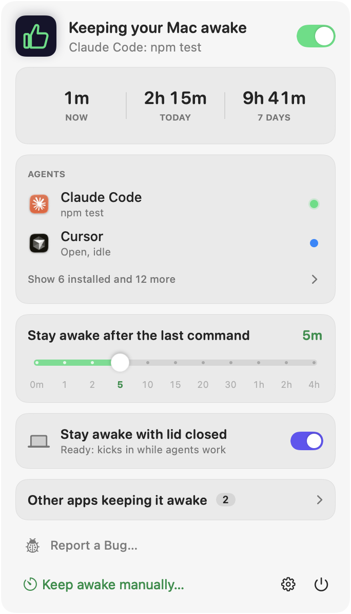
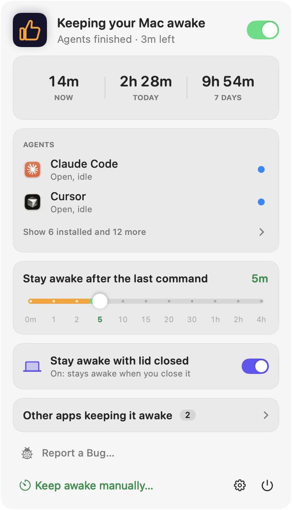
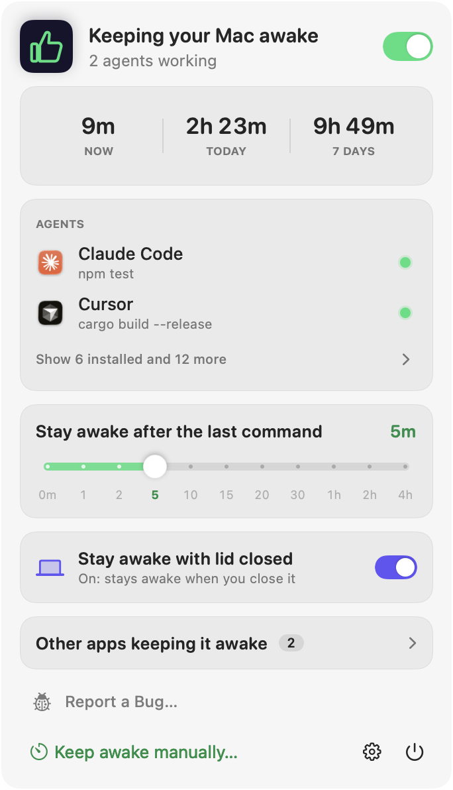

A free menu bar app for macOS
Close the lid.
Your agents keep going.
thumbs-out keeps your Mac awake while Claude Code, Codex, Cursor and Antigravity run commands, and lets it sleep when they're done.
brew install --cask mj0lken/tap/thumbs-out




-
1 / 6
It lives in your menu bar
Click the thumb to see what it's doing. While no agent is working, thumbs-out stays out of the way and your Mac sleeps as usual.
-
2 / 6
It notices your agents
Claude Code runs
npm test: its dot turns green and your Mac stays awake. The rest wait in a side list.- Working
- Open, idle
- Installed
-
3 / 6
It counts the time
See how long it has kept your Mac going: right now, today and over the last week.
-
4 / 6
It leaves room to think
Agents pause between commands. A grace period keeps the Mac up while they think, and the amber bar counts it down. Snap it anywhere from 0 minutes to 4 hours.
-
5 / 6
Close the lid. Keep going.
Lid-closed mode keeps a closed MacBook awake while agents work, then lets it sleep again. It's optional and needs your password once.
-
6 / 6
It shows who else is awake
See which other apps are holding your Mac awake in a side list, or keep it awake by hand for 15 minutes to 5 hours. Something off? Report a Bug pre-fills a GitHub issue.
Works with
The agents you already use
thumbs-out finds what's installed, apps and command-line tools alike, and picks up agents you install later.
- Working running a command, keeping the Mac awake
- Open, idle running, but not doing anything right now
- Installed found on your Mac, not running
Agents On by default
- Claude Code
- ChatGPT / Codex
- Antigravity
- Antigravity IDE
- Gemini CLI
- Cursor
- Windsurf
- Kiro
- GitHub Copilot CLI
- OpenCode
- Aider
- Goose
- Amp
- Factory Droid
- Qwen Code
- Crush
Editors & terminals Opt-in
- VS Code
- Zed
- Warp
Every command typed in them counts, including your own.
Local models Opt-in
- Ollama
- LM Studio
Counted as busy while generating, by CPU use.
Lid-closed mode
Built to be trusted with a closed lid
Normally a MacBook sleeps the moment you close it. Keeping it awake means flipping a system switch, so thumbs-out treats that switch carefully.
- One password, one command. Setup allows only
pmset disablesleep, nothing else. - Always turned back on. When agents finish, the battery runs low, you quit, or it crashes.
- Locked while it's closed. The screen locks as the lid shuts; agents keep running behind it.
- Never touches what it didn't change. And removes itself in one click.
Put your thumbs away.
Homebrew
brew install --cask mj0lken/tap/thumbs-out
Download
Download the latest releaseWill it run on my Mac?
Checks your chip and macOS version right here in the browser. Nothing is sent anywhere.
To be sure, run this in Terminal. It should print 15 or higher, then arm64.
sw_vers -productVersion; uname -m
- The app isn't notarized by Apple yet, so the first launch is blocked. Click Done.
- Open System Settings › Privacy & Security and click Open Anyway.
- The welcome window shows the agents it found and walks you through the rest.